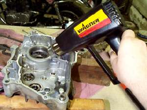
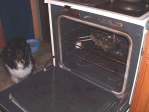
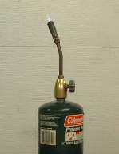
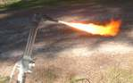
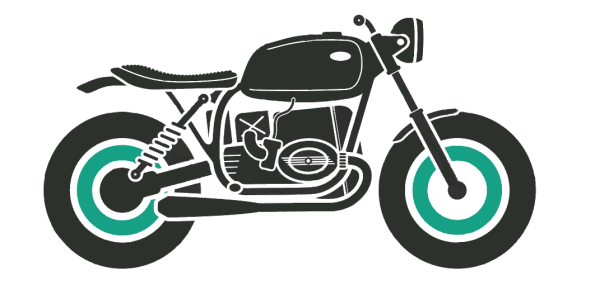
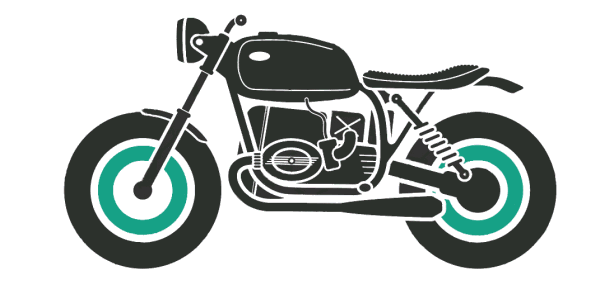

HOT & COLD

¶ Metal is not as hard as it looks or feels. It is always moving. As the temperature goes up metal expands. As the temperature goes down it shrinks. This has advantages and disadvantages. The disadvantage? This changing of size can loosen nuts and bolts. The advantage? It can help us take things apart. An example would be wheel bearings. Most are in an aluminum hub. aluminum expands a lot when heated. So just break out the torch and have at it .. right?
No!
You want to start with gentle heat and if necessary go up from there. I use a Hot Air Gun. Hair driers don't put out enough heat and a boiling water soaked towel... well, not me. You want to heat the entire object. IF you heat only one part of it whatever it is you are heating can warp out of shape... not good... so move the gun around to evenly heat it.



Hot and Cold can work for us in other areas too.
- It is best to change your oil when it is HOT, or at least warm, from running and everything is mixed up.
- Lube your rear chain when you return from a ride and the chain is HOT, so the oil will penetrate better.
- If your engine is water cooled, check the coolant level in the overflow reservoir when it is HOT.
- To get the most accurate reading, run your compression tests when the engine is HOT, but I never do. I mean really... IT'S HOT!
- To get an accurate reading, check your tire pressures when the tire is COLD. Air expands when it is hot from running.
- Only remove the Radiator Cap when it is COLD, so you do not get sprayed with boiling water. A good thing that.
- Check Valve Clearances when the engine is COLD. Remember, metal expands when it is hot.

 |
 |
Copyright © 1999-2016 dansmc.com. All rights reserved.